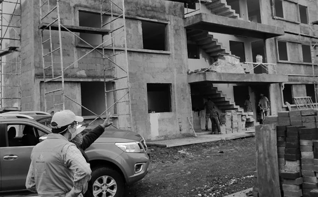

En el año 2010 se creó coinma (Construcciones, Instalaciones y Mantenimientos), la cual fue dirigida al
mercado del ramo de la construcción residencial, y de las telecomunicaciones durante un año y medio se
trabajó solo en la ciudad de Zamora Michoacán y Chilpacingo Guerrero, un año después se tuvo la
oportunidad de ingresar al ramo industrial y comercial, y con base a la promoción personalizada fue como la
inmobiliaria All In One y Fabrica Coronado nos abrieron la puertas. Con base a la experiencia de los
integrantes, en el área de las Telecomunicaciones, fue que en Mayo de 2014, SICE nos da la oportunidad de
ser proveedores, atendiendo solo emergencias y correctivos, para posteriormente ofrecernos la oportunidad de
atender la zona de Zamora y zona Ocotlá.
